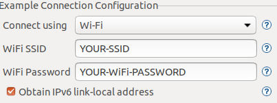

Debug and remote control state machines using YET
The itemis CREATE Execution Trace (YET) infrastructure supports interoperability between state machines running in a target application and the itemis CREATE tooling. It supports model-level debugging and testing of the state machines based on execution traces. This example shows how to remote debug a compiled state machine step by step. Please refer to the YET documentation for more information.

ESP32 blinky LED example
This is a simple blinky LED example, which uses two states. The user can switch between the Idle and Blink by setting the toggle event. Once the Blink state is active, the state machine toggles between the Off and On state. By setting the delay variable, the time for the after trigger can be changed.

This state machine is executed within an interactive application. This application can be used from the command line. It reads user input from the standard input and writes to the standard output. It is build to run on a Raspberry PI. The Simulation can be executed on any other machine. For this setup both are located the same local network.
Building, flashing and running the application
The project requires the Espressif IDF Eclipse Plugin. Just follow the detailed instructions. If you've already installed the required dependencies using our example wizard, you can start skip the first part and start with Installing ESP-IDF Tools.The instructions contain detailed explanations of how to set up the environment, compile the program and flash the binary on the ESP32. It also shows how a terminal can be added. Your WiFi SSID and password must be set in the sdkconfig file. 
If you're running the application via UDP you must set the IP of the machine, which runs the debug YET session:#define _IP "Add your IP here". The simplest way finding your ip address using ifconfing on linux or mac and ipconfing on windows. It should be something like 192.168.0.42
Debugging the statemachine trace
Debugging a statechart YET trace is simple. Within a statechart editor or on the model file entry in the project explorer choose Run As > Statechart Trace Debugging from the context menu.

This will launch the trace debugger and by default will try to read the input of socket 4444, which is defined in the application. You can change the port in the Run Configuration.
Troubleshooting
Currently, there is a bug in the esp idf eclipse plugin using 2020-09. However, there is a prebuild version, which can be installed via update site: https://github.com/espressif/idf-eclipse-plugin/issues/127